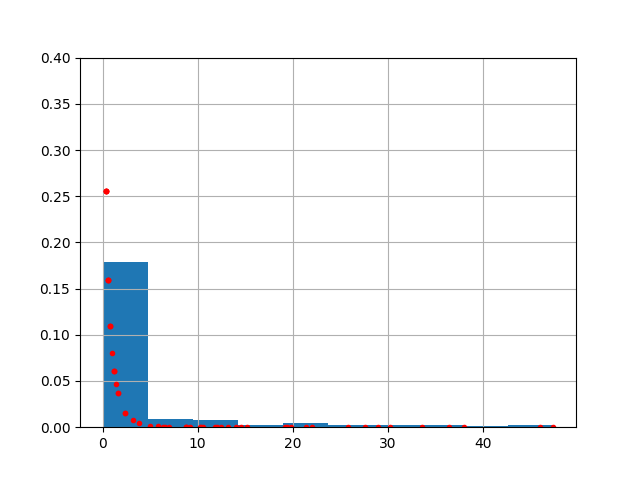
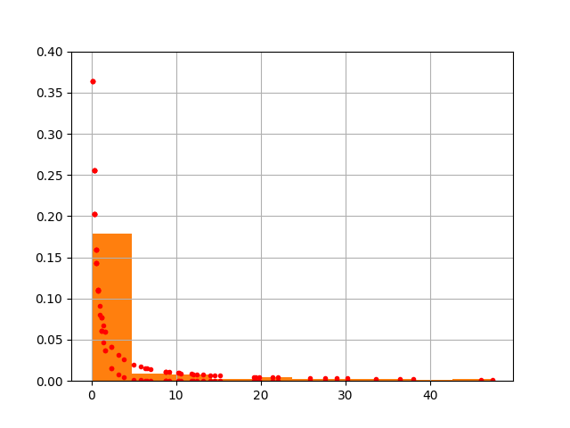

Uygulama - Yağmur Yağış Verisi
Yağış verisini nasıl analiz ederiz? Bir örnek üzerinde görelim, [1]'den alınan Singapur yağış verisi,
import pandas as pd
df = pd.read_csv('rainfall.csv',index_col=0,parse_dates=['dt'])
df.columns = ['rain']
print (df)
rain
dt
2015-01-01 0.6
2015-01-02 0.0
2015-01-03 0.0
2015-01-04 0.0
2015-01-05 0.0
... ...
2022-01-27 0.0
2022-01-28 0.0
2022-01-29 0.0
2022-01-30 3.8
2022-01-31 0.0
[2588 rows x 1 columns]
Yağış verisi milimetre yağış miktarı olarak gösterilmiş. Bazı günlerde hiç yağış yok, o günlerde su sıfır milimetre.
Bu verinin dağılımını görmek ilginç olabilir. Tabii her ayın yağış dağılımı farklı olabilir, mesela altta Mart ayına bakalım,
x = df[df.index.month == 3]['rain']
Bu veriye ne tür dağılım uygun olur? Literatürde pek çok kullanım var. Bazıları Gamma, bazıları Weibull diyor. Biz altta ikisini de test edeceğiz.
from scipy.stats import gamma
res = gamma.fit(df['rain'])
a,loc,scale = res
x.hist(density=True)
plt.ylim(0,0.4)
plt.plot(x, gamma.pdf(x,a,loc,scale),'r.')
plt.savefig('stat_176_app1_01.png')

Hem veriden gelen histogramı hem de olasılık yoğunluk fonksiyonunu aynı grafikte gösterdik, kabaca ilk kontrol bu şekilde yapılabilir.
Daha detayli veriye olan uygunluğu kontrol için olasılık dağılımları arasında
bir yakınlık ölçüsü olan Kullback-Leibler mesafesini [2] kullanalım. Veri
histogramı ve tahmin edilen dağılım üzerinden üretilenlerin histogramı arasında
mesafeyi alttaki fonksiyon kl ile ölçebiliriz,
def kl(p, q):
return np.sum(p * np.log(p / q))
b = range(0,50)
eps = 1e-5
s = 4000
dh = np.histogram(df.rain, bins=b, density=True)[0]+eps
r1 = gamma.rvs(a,loc,scale,size=s)
h1 = np.histogram(r1, bins=b, density=True)[0]+eps
print ('Gamma', kl(h1, dh))
Gamma 0.288253598547884
Weibull Min adlı dağılım için de kontrol yapalım.
from scipy.stats import weibull_min
res = weibull_min.fit(df['rain'])
a,loc,scale = res
x.hist(density=True)
plt.ylim(0,0.4)
plt.plot(x, weibull_min.pdf(x,a,loc,scale),'r.')
plt.savefig('stat_176_app1_02.png')

r2 = weibull_min.rvs(a,loc,scale,size=s)
h2 = np.histogram(r2, bins=b, density=True)[0]+eps
print ('Weibull Min', kl(h2, dh))
Weibull Min 0.06795850872796806
Weibull Min daha yakın gözüküyor.
Olasılıklar
Veriye en uygun dağılımı bulduktan sonra dağılıma bazı sorular sorabiliriz, mesela Mart ayında 10 mm'den daha fazla yağmur yağma olasılığı nedir? Bunun için kumulatif dağılım fonksiyonu CDF lazım, 'daha büyük' sorusu belli bir noktadan sonraki, onun sağındaki alanı ima ediyor, o zaman cdf çağrısını 1'den çıkartırız,
print ('%0.3f' % (1-weibull_min.cdf(10, a,loc,scale)))
0.140
Az (ama sıfır olmayan) bir olasılık var.
Yağmur Günleri, Kuraklık Günleri
Bazı araştırmalar ne kadar yağdığını ayrı bir şekilde temsil edip, yagıp yağmadığı aksiyonunu ayrı bir şekilde tahmin ediyor (bu durumda herhalde miktar dağılımlarını sadece sıfırdan büyük değerler için kullanmak yeterli olur). Aksiyon derken ne kadar yağarsa yağsın o gün 'yağdı' olarak alınıyor, tersi ise 'yağmadı'. Bu ayrıksal konumlar arasındaki geçişler, olasılıksal şekilde Markov Zincirleri ile temsil edilebilir, bkz [4]'te gösterilen tek gün öncesine dayanarak yapılan tahmin (ilk örnek). Örnek tek gün öncesini kullanmış. Fakat önceki iki günün tüm kombinasyonları yağma/yağmama üzerinden 4 konum ile temsil edilirse, o zaman iki gün öncesi de hesaba dahil edilebilir.
Markov Zinciri hazırlığı, önceki gün yağış olup olmadığı D1, iki gün öncesi D2, bugün D0.
df = pd.read_csv('rainfall.csv',index_col=0,parse_dates=['dt'])
df.columns = ['rain']
df['r1ago'] = df.rain.shift(1)
df['r2ago'] = df.rain.shift(2)
df['D1'] = df.apply(lambda row: (row.r1ago > 0.0).astype(int), axis=1)
df['D2'] = df.apply(lambda row: (row.r2ago > 0.0).astype(int), axis=1)
df['D0'] = df.apply(lambda row: (row.rain > 0.0).astype(int), axis=1)
pd.set_option('display.max_columns', None)
print (df)
rain r1ago r2ago D1 D2 D0
dt
2015-01-01 0.6 NaN NaN 0 0 1
2015-01-02 0.0 0.6 NaN 1 0 0
2015-01-03 0.0 0.0 0.6 0 1 0
2015-01-04 0.0 0.0 0.0 0 0 0
2015-01-05 0.0 0.0 0.0 0 0 0
... ... ... ... .. .. ..
2022-01-27 0.0 0.0 0.0 0 0 0
2022-01-28 0.0 0.0 0.0 0 0 0
2022-01-29 0.0 0.0 0.0 0 0 0
2022-01-30 3.8 0.0 0.0 0 0 1
2022-01-31 0.0 3.8 0.0 1 0 0
[2588 rows x 6 columns]
g = df.groupby(['D1','D2','D0']).size().reset_index()
print (g)
D1 D2 D0 0
0 0 0 0 633
1 0 0 1 269
2 0 1 0 268
3 0 1 1 228
4 1 0 0 244
5 1 0 1 253
6 1 1 0 253
7 1 1 1 440
Bu sayıları nasıl Markov matrisine çevireceğimizi anlamak için [1, sf. 193].
Konumları etiketlemek için alttakini yapalım,
pivot = g.pivot_table(index=['D1','D2'], columns='D0', aggfunc='mean')
pivot = pivot.reset_index()
print (pivot)
D1 D2 0
D0 0 1
0 0 0 633 269
1 0 1 268 228
2 1 0 244 253
3 1 1 253 440
Böylece konum 0,1,2,3 elde ettik. İki gün önce ve bir gün önce yağmadı konumu 0, iki gün önce yağdı bir gün önce yağmadı konum 1, böyle gidiyor. Şimdi dikkat, buradan bir Markov matrisi çıkartmak için geçiş hedefinde iki kolonlu bir matris (yağdı,yağmadı) kullanamayız. O durumda matris 4 x 2 boyutunda olurdu, bu bir Markov matrisi olmaz. Boyutlar 4 x 4 olmalı. Peki o zaman mesela yağdı, yağmadı konumundan bugün yağdı konumuna nasıl geçeceğiz? Ufak bir numara kullanarak; yağdı-yağmadı (2 etiketi) konumundan yağmadı-yağdı konumuna (1 etiketi) geçişi yapacağız. Öyle ya, yağdı, yağmadı konumundan geçiş yaptıktan sonra yeni bir gündeyiz, artık bir gün öncesi iki gun oncesi oldu, bugün de 'yağdı' durumu var, gelinen yer yağmadı-yağdı.
Olasılık verisini oluşturalım. Üstteki matristeki toplamları her satırın nihai toplamı ile bölelim,
MC = np.array(pivot).astype(float)
probs = MC[:,[2,3]] / MC.sum(axis=1).reshape(4,1)
MC[:,[2,3]] = probs
MC = pd.DataFrame(MC)
MC.columns = ['D1','D2','norain','rain']
print (MC)
D1 D2 norain rain
0 0.0 0.0 0.701774 0.298226
1 0.0 1.0 0.539235 0.458753
2 1.0 0.0 0.489960 0.508032
3 1.0 1.0 0.364029 0.633094
Ufak bir matris olduğu için bu olasılıkları elle gerekli yerlere kodlayabiliriz,
MCfinal = np.zeros((4,4))
MCfinal[0,0] = MC.loc[0]['norain']
MCfinal[0,2] = MC.loc[0]['rain']
MCfinal[1,0] = MC.loc[1]['norain']
MCfinal[1,2] = MC.loc[1]['rain']
MCfinal[2,1] = MC.loc[2]['norain']
MCfinal[2,3] = MC.loc[2]['rain']
MCfinal[3,1] = MC.loc[3]['norain']
MCfinal[3,3] = MC.loc[3]['rain']
print (MCfinal)
[[0.70177384 0. 0.29822616 0. ]
[0.53923541 0. 0.45875252 0. ]
[0. 0.48995984 0. 0.50803213]
[0. 0.36402878 0. 0.63309353]]
Markov matrisini elde ettik. Artık bu matris üzerinde ek işlemler yapabiliriz. Daha önce [4]'te bir, iki, hatta daha fazla adım sonrasını MZ ile tahmin edebilme kabiliyeti işlendi, basit matris çarpımı ile bu yapılabiliyor. Eğer dün ve iki gün önce yağmur yağdıysa (etiket 3), acaba önümüzdeki iki gün, üç gün içinde yağmur yağma olasılığı nedir (aynı etiket)?
import numpy.linalg as lin
P2 = lin.matrix_power(MCfinal,2)
print (P2)
print (")
P3 = lin.matrix_power(MCfinal,3)
print (P3)
[[0.49248652 0.14611884 0.20928732 0.15150847]
[0.3784213 0.22477031 0.16081411 0.23306102]
[0.2642037 0.18493831 0.22477031 0.32163185]
[0.19629721 0.23046426 0.16699912 0.40080741]]
[[0.42440661 0.15769583 0.21390475 0.20224372]
[0.38677028 0.16363337 0.21596908 0.22924815]
[0.28513653 0.22721167 0.16363337 0.31781358]
[0.26203074 0.22772829 0.16426702 0.33858949]]
print (MCfinal[3,3])
print (P2[3,3])
print (P3[3,3])
0.6330935251798561
0.40080741162465705
0.33858949401527094
Peki önümüzdeki üç günün herhangi birinde yağma olasılığı nasıl hesaplanır? Her üç matris içinde yağdı-yağdı konumundan bu sefer yağmadı-yağdı konumuna (etiket 1) geçiş olasıklarına bakarız, bu olasılıkları birbiri ile çarparız, böylece sırasıyla üç gün hiç yağmama olasılığı elde edilir. 1 değerinden bu değeri çıkartınca herhangi bir gün yağma olasılığı çıkar.
norain = MCfinal[3,1]*P2[3,1]*P3[3,1]
print (1-norain)
0.9808945929621133
Kaynaklar
[1] Meteorological Service Singapore, http://www.weather.gov.sg/climate-historical-daily/
[2] Bayramlı, Kullback-Leibler (KL) Mesafesi
[3] Ross, Introduction to Probability Models, 10th Ed
[4] Bayramlı, Istatistik, Markov Zincirleri
Yukarı